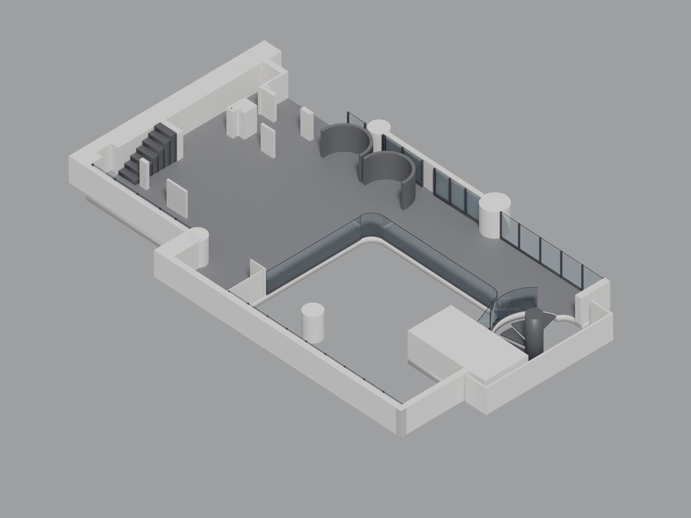
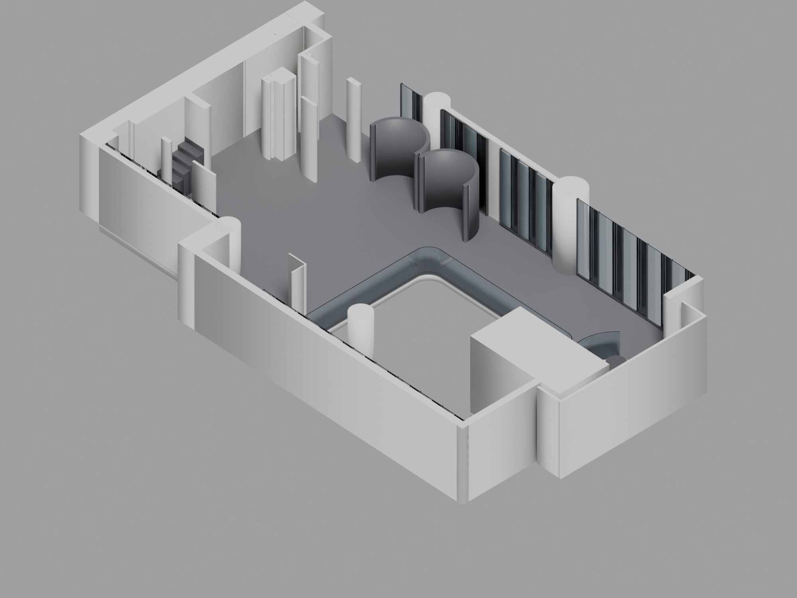

La coque dans Blender
rendus en argile, sans mobilier · tout est refait par le script outils/blender/floor2.py

1 · Le calage, vu de dessus : les murs extrudés tombent sur ceux du plan.

2 · La coque coupée à 1,20 m : la lecture « carte ».

3 · Toute la hauteur de la mezzanine (3,00 m), sans plafond : la dalle percée de ses vides et les garde-corps.